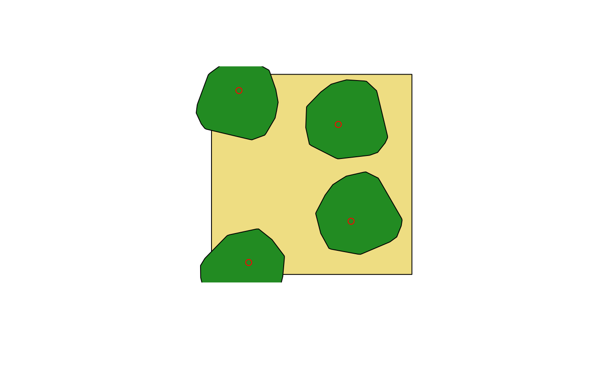

Create an artificial forest stand of a given area using tree point clouds.
artificial_stand(
files,
n.trees,
dimension,
coordinates = NULL,
sample = TRUE,
replace = TRUE,
overlap = NULL,
rotation = TRUE,
degrees = NULL,
n_attempts = 100,
progress = TRUE,
plot = TRUE,
...
)Arguments
- files
A
charactervector describing the file name or path of the tree point cloud to use. Those files most contain three columns representing the *XYZ* coordinates of a given point cloud.- n.trees
A positive
numericvector describing the number of point clouds to use.- dimension
A positive
numericvector of length two describing the width and length of the future forest stand.- coordinates
A
data.tableof two columns and withnrowsequal ton.treesdescribing the basal *XYZ* coordinates of the point clouds in the future stand. IfNULL, it uses random basal coordinates based on stand dimension.NULLas default.- sample
Logical. If
TRUE, it performs a sample of thefilesto determine the order to build the artificial stand. IfFALSE, it use the file order described infiles.TRUEas default.- replace
Logical. If
TRUE, it performs a sample selection with a replacement ifsample = TRUEto determine the order to build the artificial stand. Useful if then.treesis lower thanlength(files).TRUEas default.- overlap
A positive
numericvector between 0 and 100 describing the overlap percentage of a given the tree crowns in the future forest stand. IfNULL, the degree of overlap is not controlled.- rotation
Logical. If
TRUE, it performs a rotation in yaw axis of the point cloud.TRUEas default.- degrees
A positive
numericvector describing the degrees of rotation of the point clouds in the future stand. Thelength(degree)should be the same asn.trees. IfNULL, it creates random degrees of rotation for eachn.trees.- n_attempts
A positive
numericvector of length one describing the number of attempts to provide randomcoordinatesuntil a tree met theoverlapcriteria. This needs to be used ifcoordinate = NULLandoverlap != NULL.n_attempts = 100as default.- progress
Logical, if
TRUEdisplays a graphical progress bar.TRUEas default.- plot
Logical. If
TRUE, it provides visual tracking of the distribution of each tree in the artificial stand. This can not be exported as a return object.- ...
Parameters passed to
freadfor the reading offiles.
Value
A list which contain a data.table (Trees) with the information of the point clouds used and their current coordinates in the stand, and another data.table with that compile all the point clouds used.
Details
When coordinates = NULL, artifical_stand adds, in sequence,
random coordinates to each files in the future stand based on the
crown area overlap. That is, first a tree from files is
randomly located within the stand dimention, then a second tree from
files will be located in the future stand based on the crown area
overlap from the previous tree, and so on. If during the random
location a given tree does not meet the requirements of overlap, new
random coordinates will be provided until the requirements are met.
Since artificial_stand will try to add tree to the stand until the
requirements are met, this could lead to an infinite loop if the stand
dimention is small or if the trees on files are large or many
n.trees. Therefore, the use of n_attempts is recommended to avoid
this scenario.
See also
Examples
#' #Import an example point cloud
path <- system.file("extdata", "pc_tree.txt", package = "rTLS")
#Creates a stand of 4 trees with 10% of overlap
files <- rep(path, 4)
artificial_stand(files, n.trees = 4, dimension = c(15, 15), overlap = 10)

#> Creating an artificial forest stand of 15 x 15 with 4 trees
|
| | 0%
|
|================== | 25%
|
|=================================== | 50%
|
|==================================================== | 75%
|
|======================================================================| 100%
#> $Stand
#> n.trees stand_area covered_area total_crown_area n_points
#> 1: 4 225 93.60138 114.196 303248
#>
#> $Trees
#> Tree file
#> 1: 1 /tmp/RtmpJRljPt/temp_libpath3c8f32891143/rTLS/extdata/pc_tree.txt
#> 2: 2 /tmp/RtmpJRljPt/temp_libpath3c8f32891143/rTLS/extdata/pc_tree.txt
#> 3: 3 /tmp/RtmpJRljPt/temp_libpath3c8f32891143/rTLS/extdata/pc_tree.txt
#> 4: 4 /tmp/RtmpJRljPt/temp_libpath3c8f32891143/rTLS/extdata/pc_tree.txt
#> Xcoordinate Ycoordinate CA Hmax
#> 1: 9.489306 11.2464647 28.54901 6.036
#> 2: 2.784030 0.8966356 28.54901 6.036
#> 3: 10.446336 3.9893417 28.54901 6.036
#> 4: 2.054869 13.7880876 28.54901 6.036
#>
#> $Cloud
#> X Y Z Tree
#> 1: 9.435401 11.12674 0.001 1
#> 2: 9.505666 11.10360 0.000 1
#> 3: 9.410832 11.15084 0.039 1
#> 4: 9.433889 11.13002 0.086 1
#> 5: 9.413047 11.12620 0.132 1
#> ---
#> 303244: 2.516888 10.67904 5.420 4
#> 303245: 2.490221 10.66250 5.464 4
#> 303246: 2.600932 10.67776 5.398 4
#> 303247: 2.597624 10.74171 5.425 4
#> 303248: 2.594357 10.69603 5.451 4
#>
#Creates a stand of 4 trees with their locations
location <- data.table(X = c(5, 10, 10, 5), Y = c(5, 5, 10, 10))
artificial_stand(files, n.trees = 4, dimension = c(15, 15), coordinates = location)
 #> Creating an artificial forest stand of 15 x 15 with 4 trees
|
| | 0%
|
|================== | 25%
|
|=================================== | 50%
|
|==================================================== | 75%
|
|======================================================================| 100%
#> $Stand
#> n.trees stand_area covered_area total_crown_area n_points
#> 1: 4 225 101.9986 101.9986 303248
#>
#> $Trees
#> Tree file
#> 1: 1 /tmp/RtmpJRljPt/temp_libpath3c8f32891143/rTLS/extdata/pc_tree.txt
#> 2: 2 /tmp/RtmpJRljPt/temp_libpath3c8f32891143/rTLS/extdata/pc_tree.txt
#> 3: 3 /tmp/RtmpJRljPt/temp_libpath3c8f32891143/rTLS/extdata/pc_tree.txt
#> 4: 4 /tmp/RtmpJRljPt/temp_libpath3c8f32891143/rTLS/extdata/pc_tree.txt
#> Xcoordinate Ycoordinate CA Hmax
#> 1: 5 5 28.54901 6.036
#> 2: 10 5 28.54901 6.036
#> 3: 10 10 28.54901 6.036
#> 4: 5 10 28.54901 6.036
#>
#> $Cloud
#> X Y Z Tree
#> 1: 5.075139 4.892331 0.001 1
#> 2: 5.131044 4.940784 0.000 1
#> 3: 5.041859 4.883592 0.039 1
#> 4: 5.071554 4.892712 0.086 1
#> 5: 5.064148 4.872859 0.132 1
#> ---
#> 303244: 7.519325 8.120474 5.420 4
#> 303245: 7.512075 8.089938 5.464 4
#> 303246: 7.579839 8.178809 5.398 4
#> 303247: 7.532417 8.221833 5.425 4
#> 303248: 7.562298 8.187133 5.451 4
#>
#> Creating an artificial forest stand of 15 x 15 with 4 trees
|
| | 0%
|
|================== | 25%
|
|=================================== | 50%
|
|==================================================== | 75%
|
|======================================================================| 100%
#> $Stand
#> n.trees stand_area covered_area total_crown_area n_points
#> 1: 4 225 101.9986 101.9986 303248
#>
#> $Trees
#> Tree file
#> 1: 1 /tmp/RtmpJRljPt/temp_libpath3c8f32891143/rTLS/extdata/pc_tree.txt
#> 2: 2 /tmp/RtmpJRljPt/temp_libpath3c8f32891143/rTLS/extdata/pc_tree.txt
#> 3: 3 /tmp/RtmpJRljPt/temp_libpath3c8f32891143/rTLS/extdata/pc_tree.txt
#> 4: 4 /tmp/RtmpJRljPt/temp_libpath3c8f32891143/rTLS/extdata/pc_tree.txt
#> Xcoordinate Ycoordinate CA Hmax
#> 1: 5 5 28.54901 6.036
#> 2: 10 5 28.54901 6.036
#> 3: 10 10 28.54901 6.036
#> 4: 5 10 28.54901 6.036
#>
#> $Cloud
#> X Y Z Tree
#> 1: 5.075139 4.892331 0.001 1
#> 2: 5.131044 4.940784 0.000 1
#> 3: 5.041859 4.883592 0.039 1
#> 4: 5.071554 4.892712 0.086 1
#> 5: 5.064148 4.872859 0.132 1
#> ---
#> 303244: 7.519325 8.120474 5.420 4
#> 303245: 7.512075 8.089938 5.464 4
#> 303246: 7.579839 8.178809 5.398 4
#> 303247: 7.532417 8.221833 5.425 4
#> 303248: 7.562298 8.187133 5.451 4
#>